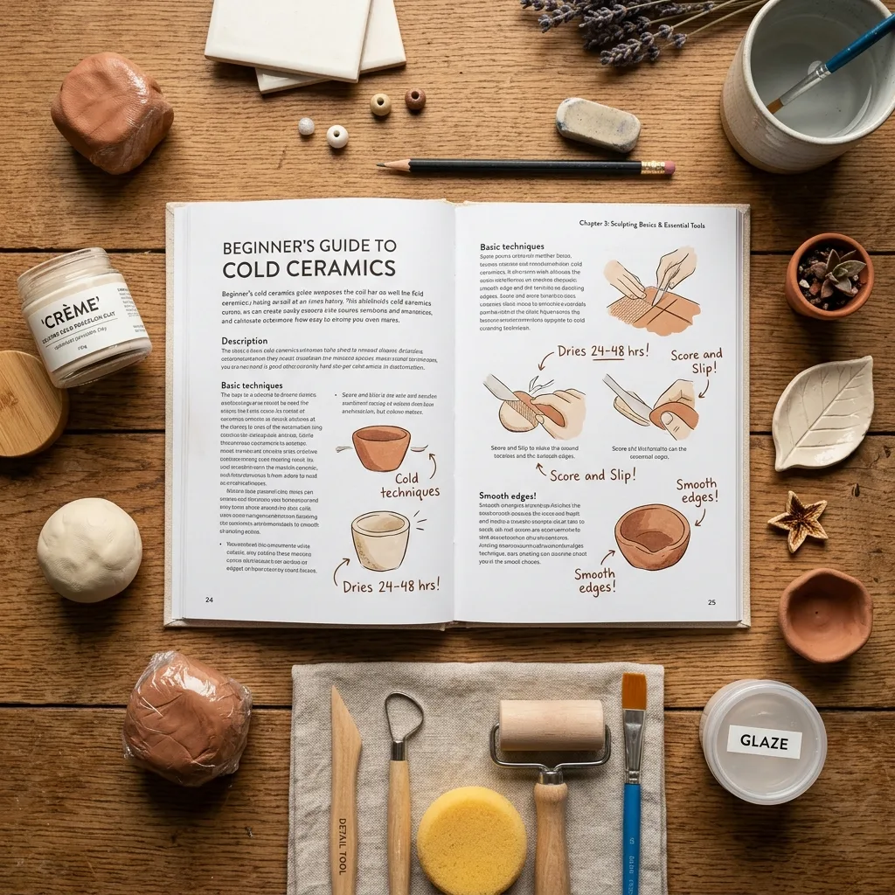
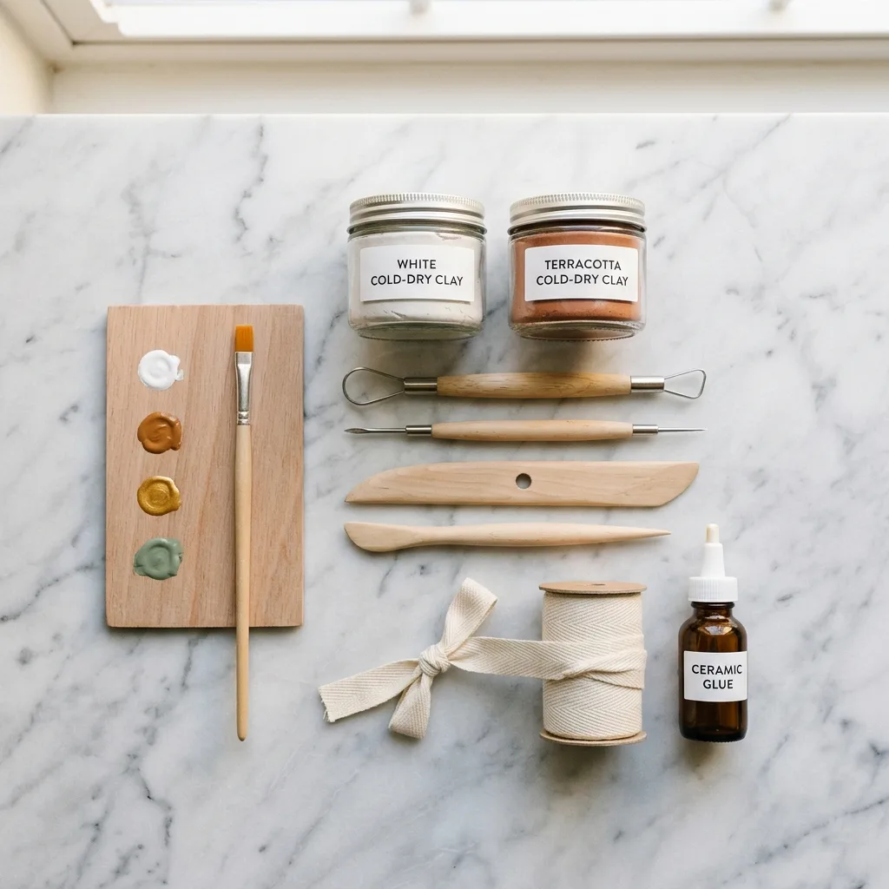
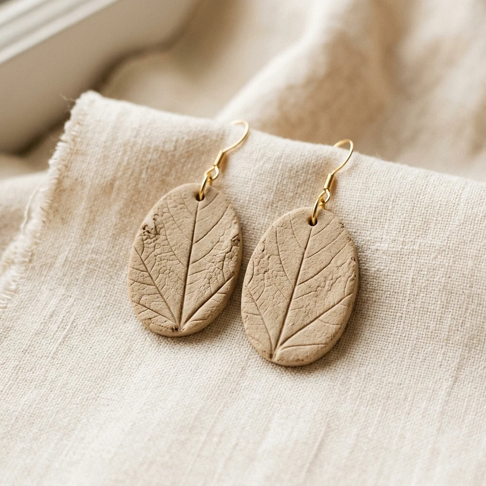

👋¿Para quién es esta guía?
Esta guía está pensada para alguien que nunca trabajó con cerámica fría y quiere empezar de la manera correcta — sin malgastar materiales, sin frustrarse y sin perder horas buscando información contradictoria en internet.
No importa si nunca hiciste nada artesanal. Aquí vas a encontrar exactamente lo que necesitás saber antes de tocar la masa por primera vez, para que tu primera sesión sea una experiencia positiva, no un desastre.
🏺¿Qué es la cerámica fría?
La cerámica fría — también llamada porcelana fría — es un material moldeable a base de pegamento y almidón de maíz que, al secarse al aire, adquiere una textura similar a la porcelana real. No necesita horno.
Sus ventajas principales para principiantes son:
- Se trabaja a temperatura ambiente, sin riesgo de quemaduras ni equipos especiales
- Los errores se corrigen fácilmente mientras la masa está fresca
- El costo de los materiales es muy bajo comparado con otras técnicas artesanales
- Se puede usar en la mesa del comedor — sin taller, sin caos
- Al secarse, el resultado tiene un acabado translúcido y elegante
⚠️Los 6 errores más frecuentes al empezar
La mayoría de los principiantes comete los mismos errores. Conocerlos antes de empezar te ahorra materiales, tiempo y frustraciones.
Trabajar la masa con las manos sucias o húmedas
La humedad en exceso ablanda la masa demasiado y hace que pierda su textura. La suciedad crea manchas difíciles de eliminar una vez seca.
Dejar la masa expuesta al aire entre sesiones
La cerámica fría se seca al contacto con el aire. Si la dejás sin cubrir aunque sea 10 minutos, empieza a cuartearse.
Empezar con proyectos muy complejos
Querer hacer una figura detallada en la primera sesión genera frustración. La habilidad de modelado se desarrolla con práctica progresiva.
Usar demasiada cantidad de masa a la vez
Trabajar con un trozo grande hace que parte de la masa se seque antes de terminar la pieza.
Intentar pegar partes antes de que sequen
Unir dos piezas húmedas sin la técnica correcta genera uniones débiles que se separan al secarse.
Apurar el secado con calor directo
Secar la pieza con secador de pelo o al sol intenso genera grietas, burbujas y deformaciones.
🗓️Tu primera sesión: paso a paso
Seguí este orden en tu primera sesión y vas a terminar con una pieza real en la mano y ganas de hacer más.
-
1
Preparar el espacio de trabajo
Cubrí la mesa con un mantel de plástico o papel manteca. Tené a mano: la masa, un vaso con agua, un palito de madera o espátula, y film transparente para cubrir lo que no estés usando.
💡 No necesitás herramientas especiales para empezar — tus manos son la principal herramienta. -
2
Acondicionar la masa
Corta un trozo del tamaño de una pelota de ping pong. Amasala entre las palmas durante 1-2 minutos hasta que esté suave, elástica y sin grietas en la superficie. Si se agrieta, humedecé ligeramente las manos y seguí amasando.
-
3
Hacer tu primera forma básica
Para tu debut, lo ideal es una esfera perfecta: hacé rodar la masa entre las palmas con presión pareja y movimientos circulares. El objetivo no es que quede perfecta — es que empieces a sentir cómo responde el material.
💡 Una esfera bien hecha es la base de pendientes, perlas y muchas piezas decorativas. -
4
Crear un disco plano (base de muchas piezas)
Tomá otro trozo, formá una esfera y luego aplanala con la palma de la mano sobre la superficie lisa. Pasá el palito de madera como si fuera un rodillo para lograr un grosor parejo de unos 3-4 mm. De este disco básico podés cortar con cortantes, un cuchillito o incluso a mano.
-
5
Alisar la superficie
Humedecé ligeramente la yema de un dedo y pasalo suavemente sobre la superficie de la pieza. Esto elimina marcas y da un acabado más limpio. No uses demasiada agua — solo una ligera humedad.
-
6
Dejar secar sin tocar
Colocá tus piezas sobre papel manteca o una rejilla. No las apiles ni pongas nada encima. El tiempo de secado varía: piezas finas (2-4 mm) tardan entre 24 y 48 horas. Piezas más gruesas pueden tardar hasta 72 horas.
💡 Girá la pieza a las 12 horas para que seque parejo por todos lados. -
7
Lija y terminá la pieza
Cuando la pieza esté completamente seca, lijá con papel de lija fino (grano 400) para eliminar imperfecciones. Después podés pintar, barnizar o dejarla en su color natural translúcido — las tres opciones quedan muy bien.
🏡Cómo organizar tu espacio de trabajo
No necesitás un taller. Cualquier mesa plana y limpia funciona. Lo importante es la organización:
- Superficie protegida: papel manteca, mantel de plástico o una tabla de cortar limpia
- Luz suficiente: trabajar con buena iluminación te ayuda a ver imperfecciones en la superficie
- Vaso con agua: solo para humedecer los dedos ligeramente cuando sea necesario
- Film transparente o bolsa zip: para cubrir la masa que no estés usando
- Papel de cocina: para limpiarte las manos sin manchar nada
- Una rejilla o papel manteca: donde dejar secar las piezas sin que se peguen
Lo que no necesitás para empezar: herramientas especiales, moldes, pinturas, barnices. Primero aprendé a manejar la masa. Todo lo demás viene después.
Una cosa a recordar
Tu primera pieza probablemente no va a ser perfecta — y está bien. La cerámica fría es una habilidad que se construye poco a poco. Lo importante en las primeras sesiones no es el resultado: es aprender a sentir el material, entender cómo se comporta y disfrutar el proceso.
"La perfección llega con la práctica.El disfrute empieza desde el primer día."
📋Resumen rápido: lo que viste en este bono
- Qué es la cerámica fría y por qué es ideal para principiantes
- Los 6 errores más comunes y cómo evitarlos antes de empezar
- Tu primera sesión paso a paso, desde preparar la masa hasta el secado
- Cómo organizar tu espacio de trabajo sin invertir en equipos
- La mentalidad correcta para disfrutar el proceso desde el inicio

🎯¿Qué vas a encontrar aquí?
Esta lista está pensada para que no gastes de más ni de menos. Muchos principiantes compran demasiado al empezar — herramientas que no usan, materiales de acabado que todavía no necesitan — y después se frustran.
Acá vas a encontrar exactamente lo esencial, con las cantidades recomendadas para tus primeras sesiones, alternativas económicas y consejos sobre cómo usar cada cosa.
🧱Materiales principales
Estos son los ingredientes y materiales base que vas a necesitar sí o sí para trabajar con cerámica fría.
El material base. Podés comprarla lista para usar (más práctico para principiantes) o prepararla en casa con maicena y pegamento blanco. La versión comprada es más uniforme y fácil de manejar al inicio.
Imprescindible incluso si comprás la masa lista. Se usa para espolvorear las manos y la superficie de trabajo, evitar que la masa se pegue y ajustar la textura si queda muy blanda.
Sirve tanto para preparar la masa casera como para unir partes de una pieza entre sí. También se puede diluir en agua para crear "barbotina" (pegamento de agarre extra fuerte entre piezas).
Le da elasticidad y suavidad a la masa, evitando que se quiebre al modelar. Si no la usás, la masa queda más rígida y difícil de trabajar en piezas delgadas.
Se aplica en pequeñas cantidades sobre las manos o los moldes para evitar que la masa se adhiera. También ayuda a suavizar la superficie de las piezas mientras están frescas.
Aplicada en las palmas antes de amasar, evita que la masa se pegue a la piel y permite un modelado más fluido. También hidrata las manos durante las sesiones largas.
🔧Herramientas básicas
Estas son las herramientas mínimas para trabajar bien. La mayoría ya la tenés en casa o son muy económicas.
Sirve como rodillo pequeño para aplanar la masa, para hacer agujeros en piezas de joyería, para texturizar superficies y para mover piezas delicadas sin dejar marcas de dedos.
Para cortar la masa, separar piezas de la superficie y dar formas rectas. No hace falta que sea afilado — los bordes lisos son suficientes para cerámica fría.
Para estirar la masa a un grosor parejo antes de cortar formas. Muy útil para pendientes, bases de bandejas y piezas planas. Un grosor uniforme evita que la pieza se deforme al secar.
Círculos, estrellas, hojas y flores son las formas más usadas. Permiten hacer piezas uniformes y repetibles — ideal para joyería y adornos decorativos.
Se usa cuando la pieza está completamente seca para eliminar imperfecciones, marcas de dedos y bordes irregulares. El grano 400 para el trabajo inicial y el 600 para el pulido final.
Para pintar las piezas una vez secas. Con blanco, negro y los tres colores primarios podés mezclar prácticamente cualquier tono. No hace falta comprar una paleta entera al principio.
El toque final que protege la pieza y le da el acabado brillante o mate. Sin barniz, la pintura puede rayarse y la masa perder firmeza con la humedad ambiental.
Un pincel fino para detalles, uno mediano para zonas más grandes y uno plano para aplicar barniz de manera uniforme. No hace falta invertir en pinceles profesionales al principio.
💰Presupuesto estimado para empezar
Estos son valores de referencia orientativos. Los precios varían según país y tienda, pero te dan una idea de la inversión inicial.
| Material / Herramienta | Cant. | Precio estimado |
|---|---|---|
| Cerámica fría lista (o ingredientes para hacerla) | 250 g | $3 – $8 |
| Maicena | 200 g | $1 – $2 |
| Pegamento blanco PVA | 250 ml | $2 – $5 |
| Glicerina | 50 ml | $1 – $3 |
| Aceite de bebé o vaselina | 1 frasco | $2 – $4 |
| Palitos de madera / brochetas | Pack x10 | $1 – $2 |
| Cortantes básicos (set) | 5-10 piezas | $3 – $8 |
| Papel de lija (granos 400 y 600) | 4 hojas | $1 – $2 |
| Pinturas acrílicas básicas | 5-6 colores | $5 – $12 |
| Barniz acrílico transparente | 100 ml | $3 – $6 |
| Pinceles (set básico) | 3 pinceles | $3 – $7 |
| 💡 Total estimado para empezar | $25 – $59 | |
Muchos de estos materiales los usás para decenas de piezas. El costo por pieza individual termina siendo muy bajo una vez que ya tenés los básicos.
🚫Qué NO comprar cuando empezás
Tanto como saber qué necesitás, es importante saber qué no vale la pena comprar todavía. Estas son las compras más comunes que hacen los principiantes y terminan sin usar:
⚠️ Evitá estas compras hasta tener más práctica
- Kits completos de herramientas profesionales: incluyen decenas de piezas que no vas a usar en meses. Empezá con 3-4 herramientas básicas.
- Moldes de silicona caros: al principio vas a aprender más modelando a mano libre. Los moldes son útiles cuando ya dominás la masa.
- Pinturas metálicas o especiales (dorado, plata, efecto mármol): son para piezas avanzadas. Dominá primero los colores sólidos.
- Masa en grandes cantidades: comprá poco al principio. La masa tiene fecha de vencimiento y puede secarse si no la almacenás bien.
- Libros técnicos avanzados: con La Biblia de la Cerámica Fría y estos bonos tenés todo lo necesario para tus primeros meses.
- Pistola de calor o secador especial: el secado natural es mejor. No necesitás ningún aparato para acelerar el proceso.
🛒Dónde conseguir los materiales
- Tiendas de manualidades y arte: el mejor lugar para masa lista, cortantes y pinturas acrílicas. Podés ver y tocar antes de comprar.
- Supermercados: maicena, glicerina, pegamento blanco, palitos de madera y papel de lija. Todo a precios muy accesibles.
- Farmacias: glicerina, aceite de bebé y vaselina. Generalmente más barato que en tiendas de arte.
- Ferreterías: papel de lija en distintos granos. Comprá hojas sueltas, no packs grandes.
- Tiendas online (Amazon, Mercado Libre, AliExpress): ideales para cortantes en set y pinceles. Revisá las reseñas antes de comprar.
- Grupos de Facebook y WhatsApp de cerámica fría: muchas artesanas venden materiales en menor cantidad y precio. También comparten dónde consiguen los mejores precios locales.
El secreto de las artesanas experimentadas
No compres todo de una vez. Empezá con lo mínimo: masa (o los ingredientes para hacerla), maicena, pegamento y un palito de madera. Con eso ya podés hacer tus primeras piezas. El resto lo vas sumando a medida que avanzás y sabés exactamente qué necesitás.
"Menos materiales, más foco.Más foco, más aprendizaje."
📋Resumen: tu lista de compras para empezar
- Cerámica fría lista o ingredientes para prepararla (maicena + PVA + glicerina)
- Maicena extra para trabajar la masa
- Pegamento blanco PVA
- Aceite de bebé o vaselina
- Palitos de madera / brochetas de bambú
- Cortantes básicos (círculos, flores, hojas)
- Papel de lija grano 400 y 600
- Pinturas acrílicas básicas (5-6 colores)
- Barniz acrílico transparente
- 2-3 pinceles de tamaños distintos

🎯¿Cómo usar estas ideas?
Esta selección tiene un único objetivo: que hagas tu primera pieza terminada — algo que puedas sostener, regalar o usar — sin frustrarte en el intento.
Cada idea incluye pasos simples, los materiales que necesitás y el tiempo estimado. Están ordenadas de más fácil a un poco más elaborado. Empezá por el principio y avanzá a tu ritmo.
- No necesitás herramientas especiales para ninguna de las 12 ideas
- Todas se pueden hacer en la mesa de tu casa
- Los tiempos no incluyen el secado — ese proceso es pasivo, no requiere tu atención
- Si una idea te queda imperfecta la primera vez, ¡eso es normal y esperado!
💍Categoría 1: Joyería fácil
Piezas pequeñas que se trabajan rápido, consumen poca masa y dan resultados muy vistosos. Ideales para empezar.
- Estira la masa a 3 mm de grosor con el rodillo.
- Corta 2 círculos del mismo tamaño con un cortante o tapa de bolígrafo.
- Haz un agujero en la parte superior con un palito y deja secar 24 h.
- Lija, pinta del color que quieras y barniza. Coloca el gancho de aro.
- Recoge una hoja pequeña y real (tipo laurel, eucalipto o similar).
- Estira la masa, apoya la hoja encima y pásale el rodillo suavemente para imprimir la textura.
- Recorta la forma siguiendo el contorno de la hoja. Haz el agujero y deja secar.
- Retira la hoja seca, lija los bordes y aplica pintura dorada o verde. Barniza y monta el gancho.
- Estira la masa a 4 mm. Corta un círculo grande y uno más pequeño que se superponga a un lado.
- Retira el círculo pequeño: quedará la forma de luna creciente.
- Haz el agujero para la cadena y deja secar 24 h.
- Pinta en blanco nacarado o dorado y barniza con acabado brillante.
- Forma entre 12 y 15 esferas del mismo tamaño rodando masa entre las palmas.
- Ensartalas con un palito de bambú mientras están frescas para hacer el agujero central.
- Deja secar las cuentas sobre el palito para que no se aplanen. 24 h.
- Pinta y barniza cada cuenta, luego ensártalas en hilo elástico o cordón.
🏡Categoría 2: Para el hogar
Piezas decorativas y funcionales para tu casa. Un poco más grandes, pero igual de accesibles para principiantes.
- Estira la masa a 5 mm sobre papel manteca. Corta un rectángulo o círculo de unos 10 cm.
- Apoya la pieza sobre un bol pequeño boca abajo para darle forma cóncava mientras seca.
- Opcional: presiona una hoja o textil sobre la masa antes de darle forma para crear textura.
- Deja secar 48 h, lija los bordes, pinta y barniza con acabado brillante.
- Estira la masa a 6-7 mm (más grueso que los pendientes, para mayor firmeza).
- Corta un círculo de unos 9 cm con un plato pequeño como guía.
- Texturiza la superficie presionando una tela de arpillera o red antes del secado.
- Seca 48 h, lija bordes, barniza con barniz resistente al calor moderado.
- Forma un cilindro hueco modelando la masa desde adentro con el pulgar (técnica "pellizco").
- Alisa las paredes por dentro y por fuera con los dedos humedecidos.
- Forma una base plana separada y pégala con pegamento PVA diluido. Deja secar boca abajo.
- Seca 72 h completo, lija y pinta. Usalo solo con plantas en maceta con tierra seca.
- Estira la masa a 4 mm. Corta la forma que quieras: corazón, flor, estrella, inicial.
- Presiona texturas con lo que tengas a mano: botón, tela, lápiz, palito.
- Deja secar completamente 24-36 h.
- Pinta, barniza y pega un imán pequeño en la parte trasera con pegamento fuerte.
🎁Categoría 3: Regalos únicos
Piezas con un propósito especial. Personalizables y muy fáciles de hacer. Perfectas para regalar desde tu primera semana.
- Estira la masa a 3 mm. Corta una tira de 4 × 12 cm.
- Decora la superficie con texturas, letras o formas simples presionadas con palito.
- Haz un agujero en el extremo superior y deja secar plano sobre papel manteca.
- Pinta, barniza y pasa un cordón o hilo decorativo por el agujero.
- Estira la masa a 5 mm. Corta una forma base: círculo, corazón o rectángulo.
- Graba una letra con un palito, letra de molde recortada o sello de letras.
- Haz el agujero para la argolla y deja secar 36 h.
- Pinta, barniza y coloca argolla metálica + anillo portallaves.
- Estira la masa a 3 mm. Corta rectángulos pequeños de 3 × 7 cm.
- Inserta un palito de bambú en el extremo inferior antes del secado.
- Deja secar completamente en posición vertical (apoyadas en el borde de un vaso).
- Escribe el nombre de la planta con marcador permanente o pintura fina. Barniza.
- Haz elementos pequeños: flores, hojas, corazones, estrellas con cortantes mini.
- Deja secar cada pieza por separado 24 h.
- Pinta cada elemento con colores vivos y barniza.
- Pega los elementos sobre una tarjeta de cartón con pegamento fuerte. Podés escribir un mensaje detrás.
💡Consejos para que te salga bien desde el inicio
- Empezá siempre por las piezas de joyería: son pequeñas, consumen poca masa y se secan rápido. El margen de error es menor.
- Hacé dos de cada pieza: si una sale mal, tenés la otra como respaldo. Con el tiempo ambas van a salir bien.
- No compares tu primera pieza con fotos de artesanas con años de experiencia: eso genera frustración innecesaria.
- Fotografía cada pieza terminada: vas a querer ver tu evolución en pocas semanas — y va a sorprenderte.
- Si una pieza se quiebra al secar, es señal de que la masa estaba muy seca o el modelado muy fino. Guardá el trozo para reutilizarlo humectándolo levemente.
- El barniz es siempre el último paso — nunca barnices sobre pintura húmeda, esperá al menos 1 hora.
La pieza perfecta no existe en el primer intento
Cada artesana experimentada que ves online empezó exactamente donde vos estás ahora. La diferencia no es el talento — es la cantidad de piezas que hicieron. Cada pieza que terminás, aunque sea imperfecta, te enseña algo que ningún tutorial puede enseñarte.
"La práctica no busca la perfección.La construye, pieza a pieza."
📋Tus próximos pasos
- Elegí una sola idea de la Categoría 1 para tu primera sesión
- Prepará los materiales del Bono 2 antes de empezar
- Seguí los pasos del Bono 1 para acondicionar la masa correctamente
- Hacé la pieza sin apuro — el proceso es parte de la experiencia
- Fotografía el resultado y guardalo: es el punto de partida de tu progreso
- Cuando termines la primera, volvé aquí y elegí la siguiente